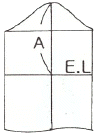
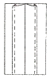
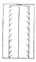
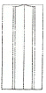
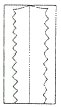
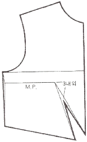
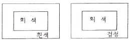

양장기능사 (2016-04-02 기출문제)
1과목: 임의 구분
1. 길 다트에서 완성된 다트 길이는 B.P에서 몇 cm정도 떨어져 처리하는 것이 가장 이상적인가?
- 1cm
- 3cm
- 5cm
- 7cm
(정답률: 89%)

2. 소매 원형 제도에서 그림 A에 해당하는 것은?

- 소매 길이
- 소매산 높이
- 진동 둘레
- 팔꿈치 길이
(정답률: 81%)
3. 칼라의 종류 중 테일러드 칼라(tailored collar) 그룹에 해당되지 않는 것은?
- 숄 칼라(shawl collar)
- 오픈 칼라(open collar)
- 셔츠 칼라(shirt collar)
- 윙 칼라(wing collar)
(정답률: 64%)
4. 가봉 시 주의사항 중 틀린 것은?
- 바늘은 옷감에 수평으로 꽂아 옷감이 울지 않게 하고 실이 늘어지지 않게 한다.
- 비이어스감과 직선으로 재단된 옷감을 붙일 때는 바이어스감을 위로 겹쳐 놓고 바느질한다.
- 실은 면사로 하되 얇은 감은 한 올로 하고, 두꺼운 감은 두 올로 한다.
- 바느질 방법은 손바느질의 상침 시침으로 한다.
(정답률: 64%)
5. 세탁을 자주 해야 하는 운동복, 아동복 등에 많이 사용하는 바느질 방법은?
- 가름솔
- 쌈솔
- 평솔
- 늰솔
(정답률: 88%)
6. 어깨 끝점에서 B.P까지 연결된 다트의 명칭은?
- 숄더 다트(shoulder dart)
- 숄더 포인트 다트(shoulder point dart)
- 언더 암 다트(under arm dart)
- 센터 프론트 넥 다트(center front neck dart)
(정답률: 82%)
7. 의복을 제작할 때 사용하는 심지의 역할이 아닌 것은?
- 의복의 강도와 수명을 연장되게 해준다.
- 의복의 실루엣을 아름답게 해준다.
- 의복의 형태가 변형되지 않도록 해준다.
- 의복의 형태가 입체감을 이루도록 해준다.
(정답률: 61%)
8. 네크라인 중 등이나 팔이 드러나며, 이브닝 드레스(evening dress)나 비치 웨어(beach wear)에 응용하는 것은?
- 하이 네크라인(high neckline)
- 카울 네크라인(cowl neckline)
- 홀터 네크라인(halter neckline)
- 스퀘어 네크라인(square neckline)
(정답률: 71%)
9. 남녀간의 체형적 특징에 대한 설명 중 틀린 것은?
- 남성은 여성에 비해 체지방이 많은 편이다.
- 남성의 피부는 두껍고, 피하지방 축적은 적다.
- 남성의 체형은 역삼각형, 여성의 체형은 모래시계형이다.
- 여성은 어깨가 좁고 골반이 넓다.
(정답률: 88%)
10. 의복 제작전 옷감의 수축률에 따른 옷감의 정리 방법 중 틀린 것은?
- 수축률이 4% 이상일 때는 옷감을 물에 담갔다가 약간 축축한 상태까지 말린 후 다린다.
- 수축률이 2~4%일 때는 안으로 물을 뿌려 헝겊에 싸 놓았다가 물기가 골고루 스며들게 한 후, 안쪽에서 옷감의 결 따라 다린다.
- 수축률이 1~2%일 때는 안쪽에서 옷감의 결을 따라 구김을 펴는 정도로 다린다.
- 기계적인 후처리로 충분히 축융시켜 만든 수축률이 낮은 옷감은 물에 30분 정도 담갔다가 말린 후 옷감의 결을 따라서 골고루 다린다.
(정답률: 71%)
11. 의복구성에 필요한 체형을 계측하는 방법 중 인체 계측기구를 사용하는 것은?
- 직접법
- 등고선법
- 입체사진 계측법
- 실루에터법
(정답률: 73%)
12. 다음 그림 중 휘갑치기 가름솔에 해당하는 것은?




(정답률: 88%)
13. 재봉기의 밑실이 끊어지는 이유로 가장 옳은 것은?
- 북집 및 북의 결함
- 실채기 용수철의 결함
- 실걸이 결함
- 바늘 높이에 의한 결함
(정답률: 85%)
14. 다트 머니퓨레이션(dart manipulation)의 설명으로 옳은 것은?
- 다트의 명칭을 나열한 것이다.
- 다트의 기초선을 그리는 것이다.
- 다트를 활용하는 기본 방법이다.
- 다트를 제도하는 것이다.
(정답률: 77%)
15. 인체 각 부분의 치수를 정확하게 직접 측정하는 방법으로 국제적 표준이 되는 것은?
- 실루에터법
- 마틴식 계측법
- 므아레사진촬영법
- 슬라이딩게이지법
(정답률: 82%)
16. 다음 중 시접 분량이 가장 작은 것은?
- 목둘레
- 블라우스 단
- 소매 단
- 어깨와 옆선
(정답률: 86%)
17. 재봉기의 분류 중 대분류에 해당되지 않는 것은?
- 직선봉 재봉기
- 단환봉 재봉기
- 편평봉 재봉기
- 특수봉 재봉기
(정답률: 57%)
18. 다음 중 세트 인 슬리브(set in sleeve) 형태에 해당하는 것은?
- 요크 슬리브(yoke sleeve)
- 래글런 슬리브(raglan sleeve)
- 랜턴 슬리브(lantern sleeve)
- 돌먼 슬리브(dolman sleeve)
(정답률: 63%)
19. 공업용 재봉기 중 직선봉이 두 개 이상 병렬되어 있는 박음 방식은?
- 장방형
- 복합봉
- 복렬봉
- 원통형
(정답률: 72%)
20. 다음 그림에 해당하는 원형은?

- 네크라인 다트(neckline dart)
- 숄더 포인트 다트(shoulder point dart)
- 센터 프론트 넥 다트(center front neck dart)
- 센터 프론트 라인 다트(center front line dart)
(정답률: 82%)
2과목: 임의 구분
21. 프린세스 라인(princess line)의 설명으로 가장 옳은 것은?
- 어깨의 숄더 다트를 높여 자른 선
- 암홀에서 N.P를 통과한 선
- 바디스(bodice)에서 웨이스트 다트를 높여 옆으로 자른 선
- 어깨의 숄더 다트와 웨이스트 다트를 연결하는 선
(정답률: 74%)
22. 연단기에 대한 설명 중 틀린 것은?
- 대량 생산을 위하여 여러 장의 원단을 쌓아서 한꺼번에 재단하는 것이다.
- 연단기는 형넣기에 의해서 정해지는 길이로 재단할 장수만큼 원단을 연단대 위에 펼쳐 쌓는 기계이다.
- 연단기의 종류로는 자동 연단기, 턴 테이블 연단기, 적극 송출 연단기 등이 있다.
- 적극 송출 연단기는 연단 시 최대한의 장력을 부여하여야 한다.
(정답률: 63%)
23. 래글런(raglan) 소매의 설명으로 옳은 것은?
- 목둘레선에서 진동둘레선까지 사선으로 절개선이 들어간 소매이다.
- 소매부리를 넓게 하여 주름을 잡아 오그리고 커프스로 처리한 소매이다.
- 어깨를 감싸는 짧은 소매로 겨드랑이에는 소매가 없는 디자인이다.
- 소매산이나 소매부리에 개더 및 플리츠를 넣은 소매로 주름의 위치와 분량에 따라 모양이 달라진다.
(정답률: 79%)
24. 다음 중 소매 원형의 제도에 사용하는 약자가 아닌 것은?
- A.H
- C.L
- B.P
- S.B.L
(정답률: 80%)
25. 제조원가를 구하는 계산식으로 옳은 것은?
- 재료비+인건비
- 재료비+인건비+제조경비
- 재료비+인건비+제조경비+판매간접비
- 재료비+인건비+제조경비+판매간접비+일반관리비
(정답률: 80%)
26. 재단할 때의 주의점으로 틀린 것은?
- 슈트, 투피스 등의 겹옷은 안단을 붙여서 재단한다.
- 소매, 바지 등의 단 부분이 좁아서 경사가 많으면 밑단 시접을 접은 다음 재단한다.
- 다트나 주름이 있는 경우에는 다트를 접거나 주름을 접은 다음에 시접을 넣어 재단한다.
- 칼라의 라펠부분이 넓은 스포츠 칼라일 경우에는 안단을 따로 재단한다.
(정답률: 65%)
27. 다음 중 의복의 기본 원형에 해당되지 않는 것은?
- 팬츠
- 스커트
- 소매
- 길
(정답률: 70%)
28. 라펠, 칼라, 다트 등과 같이 옷감을 곡면으로 정형(定型)할 때 사용하는 다림질 보조 용구는?
- 둥근 다림질대
- 소매 다림질대
- 솔기 다림질대
- 니들 보드
(정답률: 72%)
29. 시접의 분량이 다르게 되는 요인이 아닌 것은?
- 바느질 방법
- 재봉기의 종류
- 옷감의 재질
- 옷감의 두께
(정답률: 74%)
30. 옷감에 패턴 배치방법 중 틀린 것은?
- 패턴 배치를 할 때 식서 방향으로 맞추는 것이 중요하다.
- 무늬 모양이 전부 한쪽 방향으로 되어 있는 옷감은 보통 옷감의 필요 치수보다 5~10% 옷감이 적게 필요하다.
- 첨모직물은 패턴 전체를 같은 방향으로 배치하여 재단하여야 한다.
- 큰 무늬가 있는 옷감일 경우는 무늬가 한쪽에 몰리지 않도록 유의하여야 한다.
(정답률: 83%)
31. 면섬유의 미세구조 중 면섬유 전체의 90%를 차지하며, 물리적 성질을 주로 지배하는 것은?
- 중공
- 제12차 세포막
- 제2차 세포막
- 표피질
(정답률: 54%)
32. 다음 중 중심에 심이 되는 심사(心絲) 그 주위에 특수 외관을 가지도록 감은 것은?
- 방적사
- 식사
- 자수사
- 접결사
(정답률: 47%)
33. 다음 중 비중이 작은 섬유부터 큰 섬유 순서대로 나열한 것은?
- 폴리프로필렌→나일론→폴리에스터→면
- 폴리프로필렌→폴리에스터→나일론→면
- 면→폴리에스터→나일론→폴리프로필렌
- 면→나이론→폴리에스터→폴리프로필렌
(정답률: 57%)
34. 물을 잘 흡수하면서 건조가 빠르고 세탁성과 내균성이 좋아서 손수건용으로 가장 적합한 소재의 직물은?
- 양모직물
- T/C직물
- 아마직물
- T/W직물
(정답률: 71%)
35. 나일론의 장점에 해당하는 것은?
- 강도
- 흡습성
- 필링성
- 대전성
(정답률: 65%)
36. 아크릴 섬유의 장점에 해당되는 성질이 아닌 것은?
- 내열성
- 내약품성
- 내균성
- 흡습성
(정답률: 45%)
37. 실의 꼬임에 대한 설명 중 틀린 것은?
- 꼬임이 적으면 부푼 실이 된다.
- 꼬임이 많아지면 실의 광택은 줄어든다.
- 꼬임수가 많아지면 실이 부드러워진다.
- 꼬임의 방향으로 우연을 S꼬임, 좌연을 Z꼬임이라 한다.
(정답률: 66%)
38. 다음 중 섬유의 단면 모양이 원형이 아닌 것은?
- 양모
- 견
- 나이론
- 아크릴
(정답률: 72%)
39. 나일론 실에 있어서 100데니어(denier)와 50데니어의 나일론 실을 비교 설명한 것으로 옳은 것은?
- 50데니어가 100데니어보다 실의 굵기가 가늘다.
- 100데니어가 50데니어보다 실의 굵기가 가늘다.
- 50데니어가 100데니어보다 실의 길이가 길다.
- 100데니어가 50데니어보다 실의 길이가 길다.
(정답률: 59%)
40. 합성섬유 중 흡습성이 가장 좋은 섬유는?
- 폴리비닐알코올
- 폴리에스터
- 폴리프로필렌
- 폴리우레탄
(정답률: 40%)
3과목: 임의 구분
41. 색의 진출과 후퇴에 대한 설명으로 옳은 것은?
- 색의 면적이 실제보다 크게, 작게 느껴지는 심리 현상을 색의 팽창성과 수축성이라 한다.
- 고명도, 고채도, 한색계의 색은 진출, 팽창되어 보인다.
- 난색계의 파랑은 후퇴, 축소되어 보인다.
- 어두운 색이 밝은 색보다 크게 보인다.
(정답률: 64%)
42. 다음과 같이 같은 회색을 배치하였을 때 바탕색에 따라 느낌이 다르게 보이는 색의 대비는?

- 색상 대비
- 명도 대비
- 채도 대비
- 보색 대비
(정답률: 64%)
43. 색의 혼합 중 여러 색이 조밀하게 병치되어 있기 때문에 혼색되어 보이는 것은?
- 색광혼합
- 색료혼합
- 중간혼합
- 보색
(정답률: 50%)
44. 명도에 대한 설명 중 틀린 것은?
- 색의 밝고 어두운 정도는 명도라 한다.
- 순색에 흰색을 더 할수록 명도가 높아진다.
- 빛이 눈에 자극을 주는 양의 많고 적음에 따른 느낌의 정도이다.
- 유채색만 명도를 가진다.
(정답률: 73%)
45. 다음 중 흥분을 일으키는데 가장 적합한 색은?
- 난색계통으로 채도가 낮은 색
- 난색계통으로 채도가 높은 색
- 한색계통으로 채도가 낮은 색
- 항색계통으로 채도가 높은 색
(정답률: 77%)
46. 색입체에서 축에 가까운 1이나 2는 매우 탁한 색으로 거의 회색에 가까워지는 것은?
- 고채도
- 중채도
- 저채도
- 채도
(정답률: 74%)
47. 색을 느끼는 색의 강약과 관계되는 것은?
- 색상
- 채도
- 명도
- 색입체
(정답률: 62%)
48. 다음 중 색의 3속성이 아닌 것은?
- 색상
- 색상환
- 채도
- 명도
(정답률: 86%)
49. 다음 중 가장 연하고 부드러운 느낌을 주는 색으로만 나열한 것은?
- 고동색, 회색
- 분홍색, 하늘색
- 주황, 자주
- 연두색, 파랑
(정답률: 83%)
50. 남색의 의복이 노랑을 배경으로 했을 때 서로의 영향으로 인하여 각각의 채도가 더 높게 보이는 현상은?
- 보색 대비
- 면적 대비
- 명도 대비
- 색상 대비
(정답률: 74%)
51. 다음 중 나일론 섬유의 염소계 산화 표백제로 가장 적합한 것은?
- 차아염소산나트륨
- 아염소산나트륨
- 하이드로설파이트
- 유기염소표백제
(정답률: 61%)
52. 다음 중 방추가공과 관계가 없는 섬유는?
- 면
- 마
- 비스코스 레이온
- 견
(정답률: 41%)
53. 부직포의 특성에 대한 설명으로 옳은 것은?
- 직물에 비해 강도가 부족하나 내구성이 좋다.
- 실의 결이 없어 아름답지 못하나 광택은 우수하다.
- 함기량이 적으나 가볍고, 보온성, 통기성이 우수하다.
- 절단부분이 풀리지 않고, 표면 결이 곱지 않다.
(정답률: 73%)
54. 피복류의 성능요구도 중 형태안정성, 방충성, 내오염성이 해당하는 성능은?
- 감각적 성능
- 관리적 성능
- 내구적 성능
- 위생적 성능
(정답률: 57%)
55. 의류의 세탁에 대한 설명 중 틀린 것은?
- 세탁온도는 일반적으로 35~40℃가 적합한 온도이다.
- 경수에서는 섬유의 종류에 관계없이 비누보다는 합성세제를 사용하는 것이 좋다.
- 양모나 견에서는 알칼리성세제, 면이나 마에서는 중성세제를 사용한다.
- 세제의 농도는 약 0.2% 정도에서 비교적 우수한 세탁효과를 나타낸다.
(정답률: 52%)
56. 머서화 가공(mercerization)으로 얻어지는 효과가 아닌 것은?
- 광택의 증가
- 내연성의 증가
- 염색성의 증가
- 흡습성의 증가
(정답률: 42%)
57. 다음 중 산화 표백제가 아닌 것은?
- 표백분
- 아황산
- 과산화수소
- 과망간산칼륨
(정답률: 51%)
58. 양모섬유웹 또는 모직물을 비눗물에 적시고 가열하면서 문지르면 섬유가 엉키고 밀착되어 두터운 층을 만드는 성질은?
- 방추성
- 압축성
- 이염성
- 축용성
(정답률: 72%)
59. 정칙능직(正則綾織)에 해당되는 능선각은?
- 30˚
- 45˚
- 90˚
- 120˚
(정답률: 67%)
60. 다음 중 직물의 드레이프 계수가 가장 큰 것은?
- 서지(양모)
- 브로드(면)
- 부직포(건식)
- 크레이프드신(견)
(정답률: 41%)